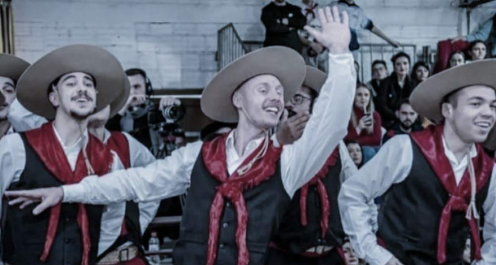
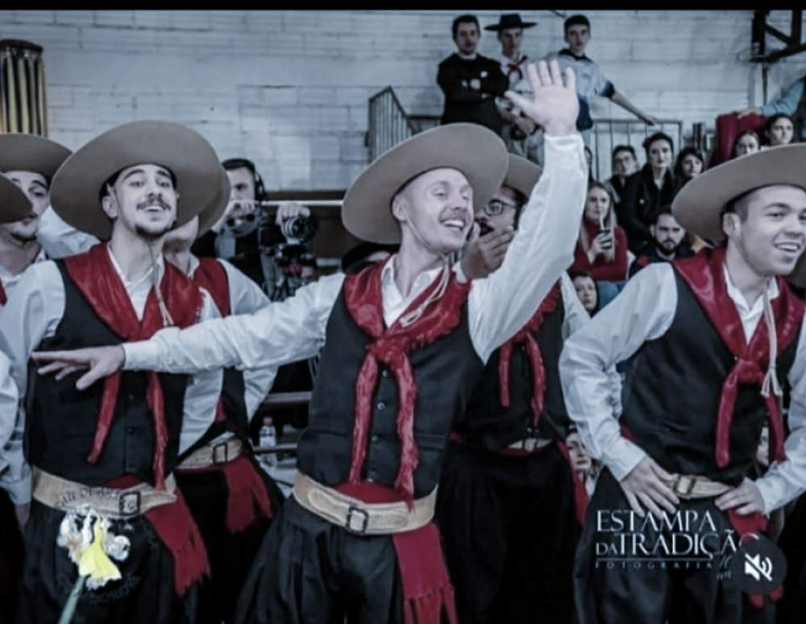
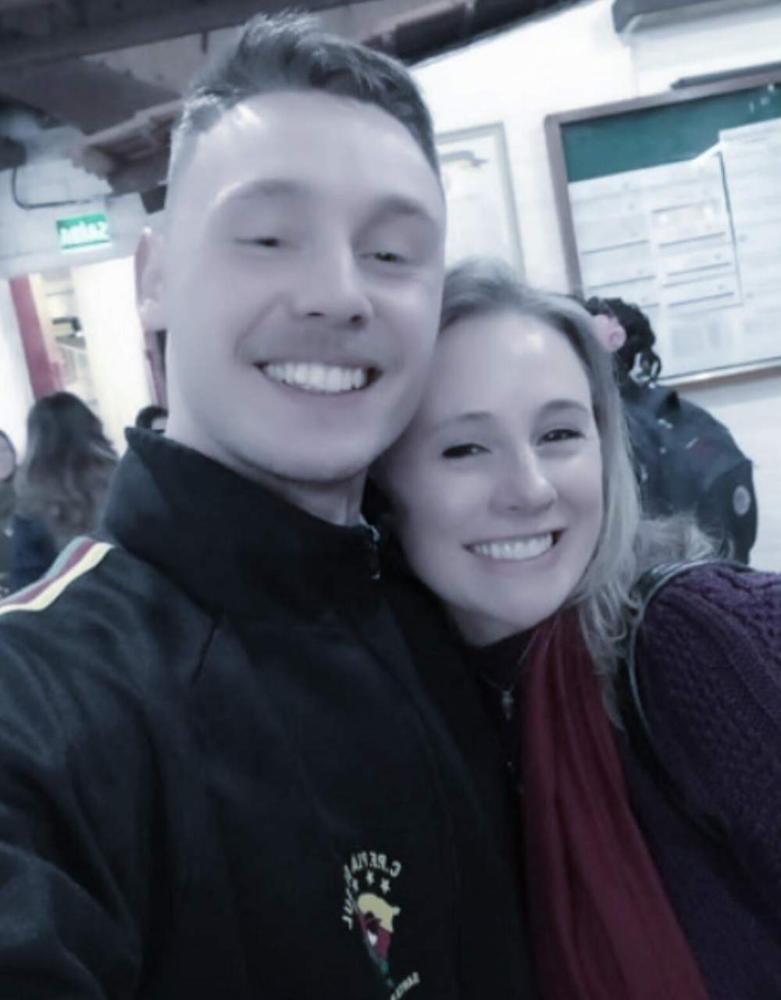

Dançarino AUGUSTO BERGMANN
Dom. 12 de Junho de 2022
Enquanto escrevo este post, talvez, o jovem venâncio-airense, Augusto Bergmann da Cunha, 21 anos, estará trabalhando, ou quem sabe nos palcos ensaiando. Atualmente, residindo em Santa Maria, onde ocupa a posição de Terceiro Sargento Temporário, na Base Administrativa Guarnição, o jovem divide o seu tempo, no quartel, com o retorno aos palcos das danças tradicionais.
E foi no Dia dos Namorados, comemorado no domingo 12 de junho, que a reafirmação do sentimento à tradição gaúcha acelerou, novamente, o coração de Augusto e da mãe, Marciane Bergmann. Ele, pela segunda vez, se apresentou com a invernada adulta do Centro de Pesquisa Folclórica (CPF) Piá do Sul, do ‘Coração do Rio Grande’. Desta feita, no Sarau da Arte Gaúcha, realizado em sua 21ª edição pelo M’Bororé, de Campo Bom.
Trajetória
Augusto iniciou a trajetória tradicionalista, como dançarino, aos 14 anos, na Invernada Juvenil do Centro de Tradição Gaúcha (CTG) Erva-Mate, de Venâncio Aires, onde dançou até 2018. Tempo suficiente para despertar o gosto pelas danças tradicionais, fazer tantos amigos e, também o envolvimento com as danças gaúchas de salão. Com esta modalidade, inclusive, chegou a competir representando sua entidade raiz, dividindo o palco com a mãe em três rodeios. “Ele realizou meu sonho de dançar e competir com a dança de salão”, conta Marciane.
Para Augusto, retornar aos tablados “é um negócio único que já não sentia há muito tempo. Parecia que faltava algo em minha vida e agora não falta mais. Mesmo que a rotina seja puxada e muito corrida é uma coisa [dançar] que me faz muito bem.”
“Coração de mãe
Segundo a mãe, o filho não deixava transparecer, mas sabia que ele sentia esta lacuna em sua vida. “Os amigos da entidade raiz continuaram. Mas aos poucos cada um segue o seu caminho, seus destinos, e de formas diferentes vão realizando seus sonhos”, salienta.
Marciane foi coordenadora artística da invernada juvenil do Erva-Mate e destaca as participações da invernada, e ao lado do filho, em três edições do JuvEnart: 2016 (5º lugar); 2017 (7º lugar); e 2018 (16º lugar). No entanto, com a ida do filho para o quartel e para investir na sua profissão, Marciane também se afastou das lides tradicionalistas.
Ao CTG Erva-Mate, pela oportunidade em despertar no filho este amor pela tradição, por consequência, o envolvimento dela, Marciane é só gratidão. “Quando ele me contou que estava de volta aos palcos, era um misto de emoção, mas aos mesmo tempo uma certa angústia por não ser o CTG de raiz, não estar com seus primeiros amigos”, conta a mãe. No entanto, “ver a felicidade dele no tablado, e o carinho do Piá do Sul, que honra as danças e a tradição me deixa muito, muito feliz”, acrescenta, a mãe.